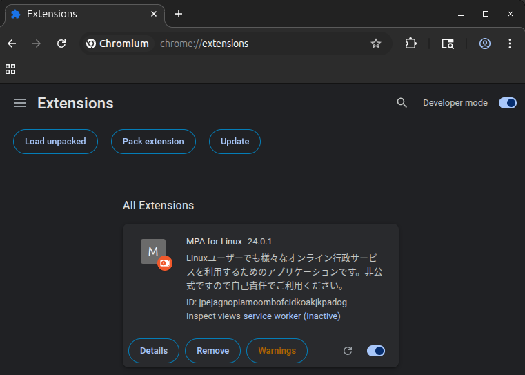
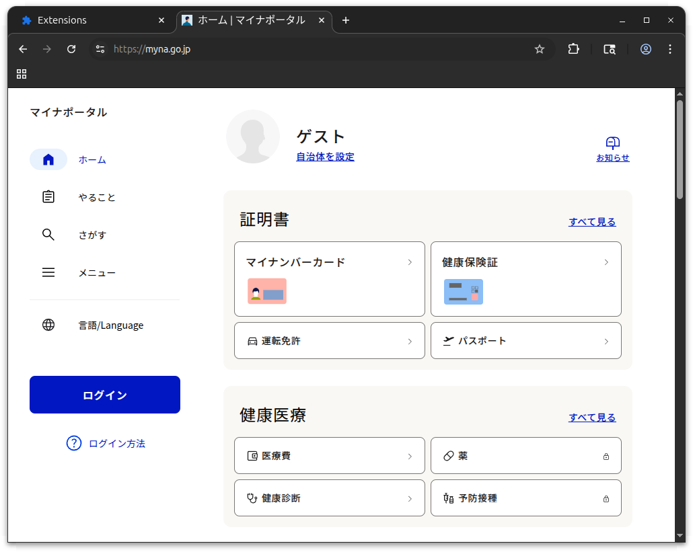
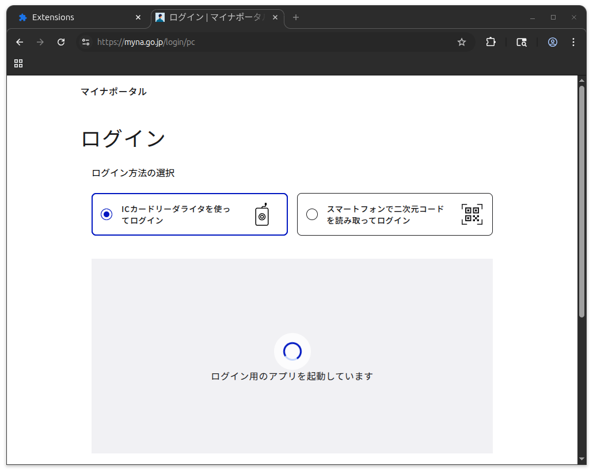
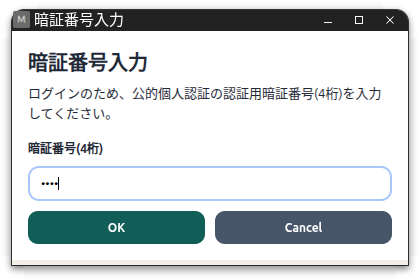
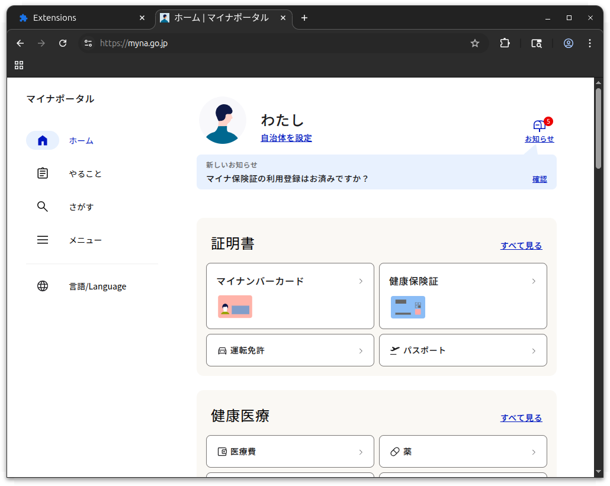
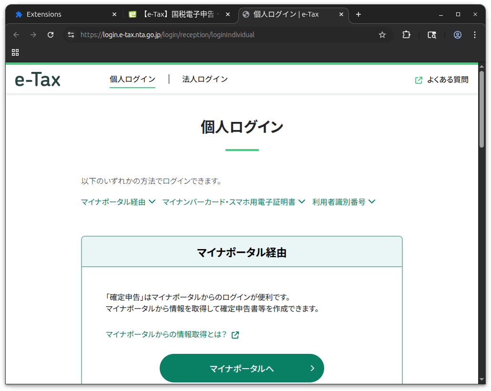
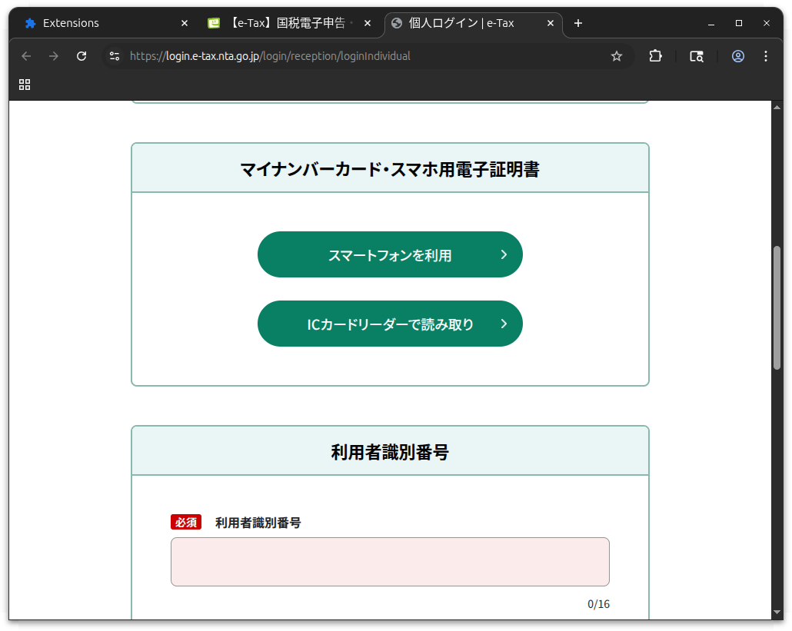
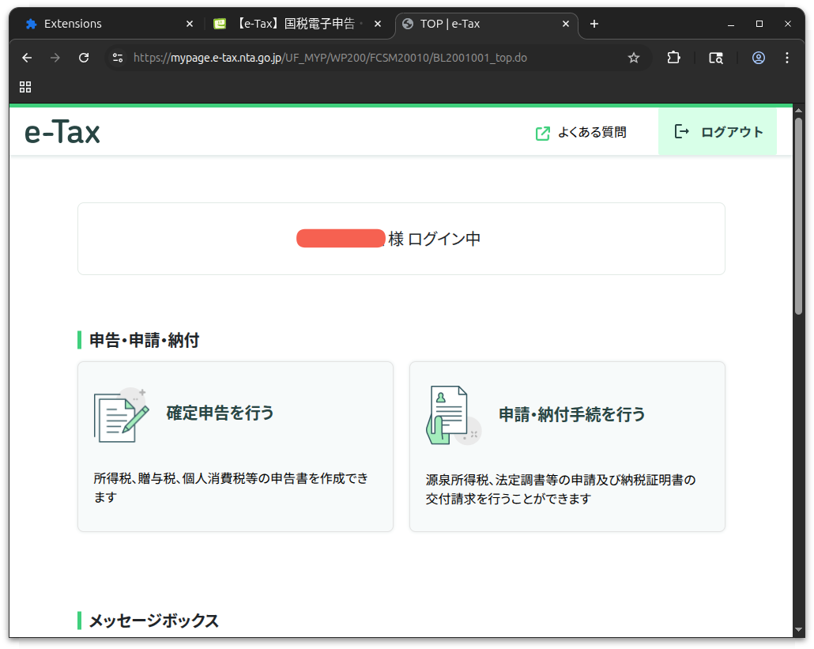

MPA for Linux でログイン検証（Linux で個人番号カードを読む 2）

前回の続き。
myna のリポジトリによると，サブプロジェクトの MPA for Linux を使って Linux の Web ブラウザでマイナポータルや e-Tax のサイトに個人番号カードを使ってログインできるらしい。 素晴らしい！
Rust ツールチェーンのインストール
事前準備として Rust ツールチェーンのインストールを行う。
Rust の基礎勉強をしてたのはもう6年も前で，仕事に結びつくこともなかったので完全に放置していた。 しかも，あれから自宅パソコンを買い替えたりして開発環境もなくなったので，インストールからやり直すことに。
インストールページに従って，以下のスクリプトをダウンロード&実行する。
$ curl --proto '=https' --tlsv1.2 -sSf https://sh.rustup.rs | sh
info: downloading installer
Welcome to Rust!
This will download and install the official compiler for the Rust
programming language, and its package manager, Cargo.
...
default host triple: x86_64-unknown-linux-gnu
default toolchain: stable (default)
profile: default
modify PATH variable: yes
1) Proceed with standard installation (default - just press enter)
2) Customize installation
3) Cancel installation
>
今回はこのまま Enter キーを押して続行。
info: profile set to default
info: default host triple is x86_64-unknown-linux-gnu
info: syncing channel updates for stable-x86_64-unknown-linux-gnu
info: latest update on 2026-03-26 for version 1.94.1 (e408947bf 2026-03-25)
...
Rust is installed now. Great!
To get started you may need to restart your current shell.
This would reload your PATH environment variable to include
Cargo's bin directory ($HOME/.cargo/bin).
To configure your current shell, you need to source
the corresponding env file under $HOME/.cargo.
This is usually done by running one of the following (note the leading DOT):
. "$HOME/.cargo/env" # For sh/bash/zsh/ash/dash/pdksh
source "$HOME/.cargo/env.fish" # For fish
source "~/.cargo/env.nu" # For nushell
source "$HOME/.cargo/env.tcsh" # For tcsh
. "$HOME/.cargo/env.ps1" # For pwsh
source "$HOME/.cargo/env.xsh" # For xonsh
これで ~/.rustup/ および ~/.cargo/ ディレクトリ以下にツールチェーンがインストールされた。
PATH 設定が ~/.cargo/env ファイルに記述されていて ~/.profile と ~/.bashrc が ~/.cargo/env を読み込むよう書き換えられている。
必要に応じて内容を調整する。
とりあえず，今すぐ PATH を通したいなら
$ . ~/.cargo/env
とすればよい1。
起動確認しておこう。
$ rustc --version
rustc 1.94.1 (e408947bf 2026-03-25)
うんうん。 問題なさそうやね。 Rust の勉強もやり直すかなぁ。
MPA for Linux のインストール
いよいよ MPA for Linux をインストールする。
適当なディレクトリに github.com/jpki/myna リポジトリを clone する。
$ git clone https://github.com/jpki/myna.git
リポジトリ内の mpa ディレクトリに移動して cargo install を実行する。
$ cd myna/mpa
$ cargo install --path .
Installing mpa v23.0.0 (/home/username/path/to/myna/mpa)
Updating crates.io index
Locking 107 packages to latest Rust 1.94.1 compatible versions
Adding der v0.7.10 (available: v0.8.0)
Adding generic-array v0.14.7 (available: v0.14.9)
Adding sha1 v0.10.6 (available: v0.11.0)
Adding sha2 v0.10.9 (available: v0.11.0)
...
Compiling myna v0.6.4 (/home/username/path/to/myna)
Compiling mpa v23.0.0 (/home/username/path/to/myna/mpa)
Finished `release` profile [optimized] target(s) in 16.86s
Installing /home/username/.cargo/bin/mpa
Installed package `mpa v23.0.0 (/home/username/path/to/myna/mpa)` (executable `mpa`)
これで ~/.cargo/bin/ ディレクトリにホストアプリケーション mpa がインストールされた。
次に同ディレクトリにある install.sh を実行してホストアプリケーションをブラウザに登録する。
ブラウザのプロファイルが既定の場所にあるのであれば，引数なしで起動すればよい。
$ ./install.sh
=== Installing Native Messaging Host manifests ===
Host path: /home/username/.cargo/bin/mpa
Installed: /home/username/.config/google-chrome/NativeMessagingHosts/com.github.jpki.mpa.json
Installed: /home/username/.config/chromium/NativeMessagingHosts/com.github.jpki.mpa.json
Installed: /home/username/.mozilla/native-messaging-hosts/com.github.jpki.mpa.json
ブラウザのプロファイルが既定のの場所にない場合は
./install.sh --user-data-dir /path/to/datadir
のように指定できるらしい。 今回は既定のままでOK。
次にブラウザのほうほうにも拡張機能をインストールする必要があるのだが，正規ルートからはインストールできないようなので Developer mode で強制的に行う。 手順は以下の通り。
Chrome
chrome://extensions/を開く- 右上のディベロッパーモードをON
パッケージ化されていない拡張機能を読み込むで./mpa/extensionを読み込む- 拡張機能のメニューから
MPA for Linuxを開く- 動作確認ボタンを押してエラーが出なければOK
Firefox(一時的)
about:debuggingのこのFirefoxを開く一時的なアドオンを読み込むで./mpa/extension/manifest.jsonを読み込む- 拡張機能のメニューから
MPA for Linuxを開く- 動作確認ボタンを押してエラーが出なければOK
メインで使ってる Firefox に入れるのは怖いので，サブとして使ってる ungoogled-chromium で試した。 やり方はたぶん Chrome と同じでいいよね。 こんな感じ？

{kind=link}
ちなみに Developer mode を OFF にするとこの拡張機能も無効になる。 これがあるからオススメしにくいんだよなぁ。
これで MPA for Linux の導入は完了。 上手くログインできるかなぁ。
マイナポータルサイトにログインする

マイナポータルより
左サイドにあるログインボタンを押してログイン画面に移動する。

{kind=link}
ここで暗証番号の入力を求められる。

{kind=link}
暗証番号入力より
利用者証明用パスワード（4文字の数字）を入力して OK ボタンをクリックする。 ボタンをクリックせず Enter キーを押すとなにも起こらず処理が止まってしまうので注意（困るなぁ）。

よし。 上手くいった！
e-Tax サイトにログインする
e-Tax サイトのログインは個人用と法人用がある。 私は個人用からログインする。

下の方にスクロールすると

「ICカードリーダーで読み取り」ボタンがあるので，これをクリックする。 あとは前節と同じように暗証番号の入力を求められるので，利用者証明用パスワード（4文字の数字）を入力して OK ボタンをクリックする。

こちらも問題なく入れた！
これで Linux 機で確定申告できる！
マイナポータルおよび e-Tax の両サイトへのログインを確認できたので，ブラウザ拡張機能の Developer mode を OFF に戻しておく。
これで来年は自宅 Linux 機で確定申告できるな。 もうスマホで確定申告するのは嫌なのよ。 スマホは入力端末としては向かないっスよ。
ミニ PC の Windows 機はますますゲーム専用機になっていくな（笑） まぁ，それはそれで重宝しているからいいか。
参考

- スーパーユーザーなら知っておくべきLinuxシステムの仕組み
- Brian Ward (著), 柴田 芳樹 (翻訳)
- インプレス 2022-03-08 (Release 2022-03-08)
- 単行本（ソフトカバー）
- 4295013498 (ASIN), 9784295013495 (EAN), 4295013498 (ISBN)
- 評価
版元で PDF 版が買える。セキュリティ・エリアにも持ち込めるよう紙の本を買ったのだが，オンライン読書会が始まったので PDF 版も購入。Linux システムの扱い方に関するリファレンス本として優れている。最初に軽く流し読みして，必要に応じて該当項目を拾い読みしていけばいいだろう。
-
コマンドの
.はsourceと同じ意味で，指定したファイルを現在の shell で実行する。 ↩︎